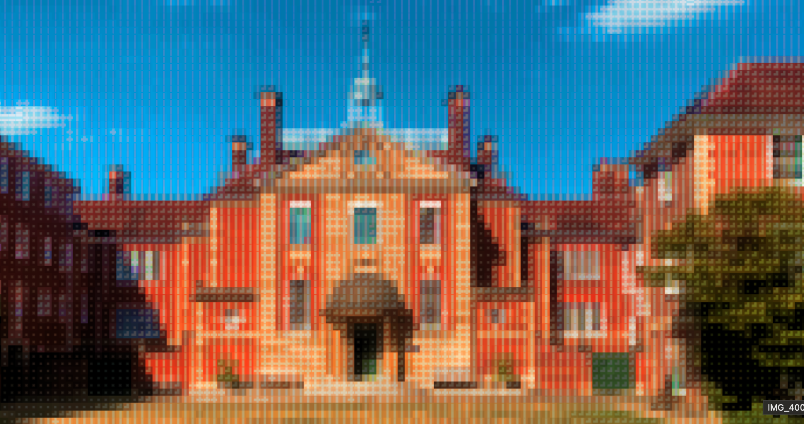

I am now at Lady Margaret Hall, Oxford, which is very exciting; however, as I hinted at the end of my last post, I have visited a lot of places on my way here. Since there is naturally more to talk about while actively travelling, and for completeness, this post will focus on my journey here, and I will save Oxford for the next one.
Prague
I flew from Athens to Prague on the afternoon of Tuesday the 24th, and after thankfully passing over the 'commie blocks' by air, I was immediately impressed by the city — twice-articulated trolley buses! All jokes aside, the public transport system, consisting of buses, a metro, and an extensive network of tram lines with both modern and retro trams, complemented the beautiful old city perfectly. I was fortunate to be staying only a short walk from the old town for just over 15 euros, which was a steal, and while checking in I met a group of friends travelling from Scotland: Charlie, Alex, and Jamie.
After a run along the river and Charles Bridge with one of my newfound friends, I explored the city. The celestial clock was tall and intricate, but not remarkable. The countless churches and cathedrals within the old town were impressive, but only a taste of what was soon to come — the castle. Prague Castle was certainly the most impressive landmark I visited in the city. It consisted of a walled area containing a gothic cathedral, the former royal palace, the workplace of the president, housing for those who used to live in the castle, various other historic artefacts, and, strangely, a peacock.
Returning to the town, Charles Bridge was nice; the view, towers, and many statues were scenic, but I was more interested in its starring role in Mission Impossible. I tracked down a variety of other locations from iconic scenes, namely that set of stairs in the National Museum that served as the interior to the US embassy, where the car blew up, and an unassuming gate that Ethan escaped the embassy from.

Berlin
I narrowly made my very scenic train to Berlin. Berlin was certainly an interesting city. The streets were wide with significant walking required between places thanks to the war, and the industrialist, grungy, yet artistic reputation is fitting. I visited the sites — namely the Brandenburg Gate, the TV Tower, and the Berlin Wall. The 'East Gallery' section of the Berlin Wall was thought-provoking and expressive, with my favourite work being a simple yet artistically impressive image of the Earth depicted behind the broken wall, beautifully illustrating the city's newfound freedom. A gold ribbon draped over the visually remaining part of the wall emphasised its connection as not just possible, but valuable.
Back at the hostel, I met people from Ireland, New Zealand, and Australia. However, I struggled to connect thanks to a lack of common ground. I wisely decided to call the night early, and this left a bit of a sour taste in my mouth about the city. This is not entirely fair because I also met interesting and fun people from Cologne, the UK, and France.
Cologne
I took the high-speed InterCity Express trains the approximate 700 kilometres from Berlin to Amsterdam, via Cologne. In true Deutsche Bahn fashion — the national train operator has an infamous reputation for being unreliable — my train to Cologne had a delayed departure from a different station and proceeded to become more delayed.
I decided to stop over in Cologne purely to see the Cathedral, which was certainly the single most impressive and awe-inspiring thing I have seen in all my travels. It is the tallest twin-spired cathedral in the world and took 632 years to build, only completing in 2004. The inside was breathtaking and vast, while the facades were intimidating and impossibly detailed. You could even climb the full 100-plus accessible metres of the towers for only 4 euro.
However, during my time there, a mass was held; there were only 3 people in the countless pews, with hundreds taking photos and sightseeing behind the roped-off area at the back. This, combined with the jarring juxtaposition of countless beggars, homeless, and troubled people outside the cathedral — all in a city where over 26% are below the statistical poverty line — illustrates a challenging relationship between this icon and its city.
Amsterdam
I made the mistake of staying outside the city centre of Amsterdam, so I became well acquainted with its public transport network. My next day in Amsterdam was far more pleasant, exploring the quaint, 'human-sized' alleyways, canals, and buildings. The Rijksmuseum's gardens were very pretty, and it was cool to see the Van Gogh Museum and the famous concert hall.
That night, I met two friends from the US who I played board games with. Going back to the theme of company, I came to realise that the people you meet in a city are not necessarily reflective of it, and vice versa. Anywhere in the world can be made immensely more enjoyable with quality people, and while travelling solo, that very well may come down to a roll of the dice. Seeing all these cities has helped me appreciate Brisbane as one of the best cities in the world, but this reflection has helped me realise the true value is my community there.